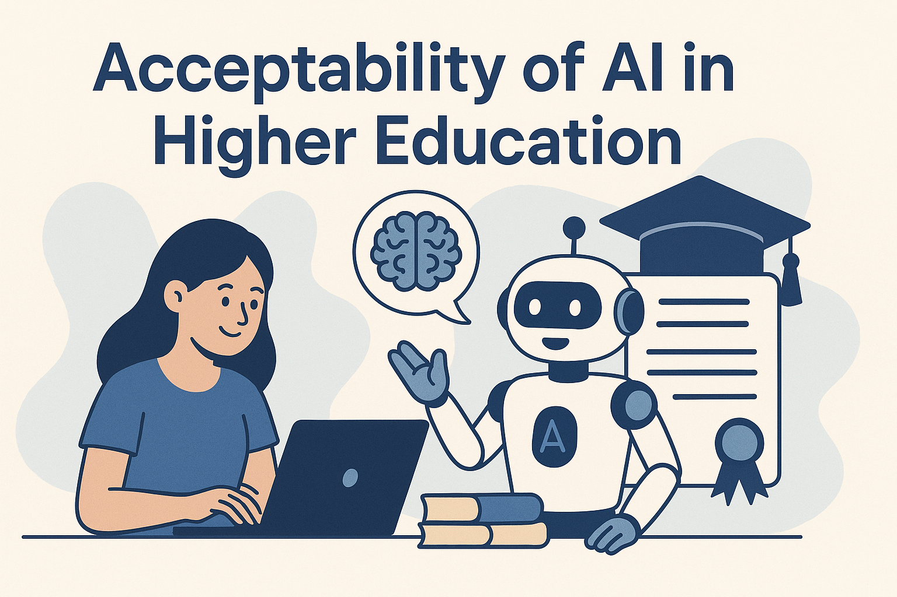
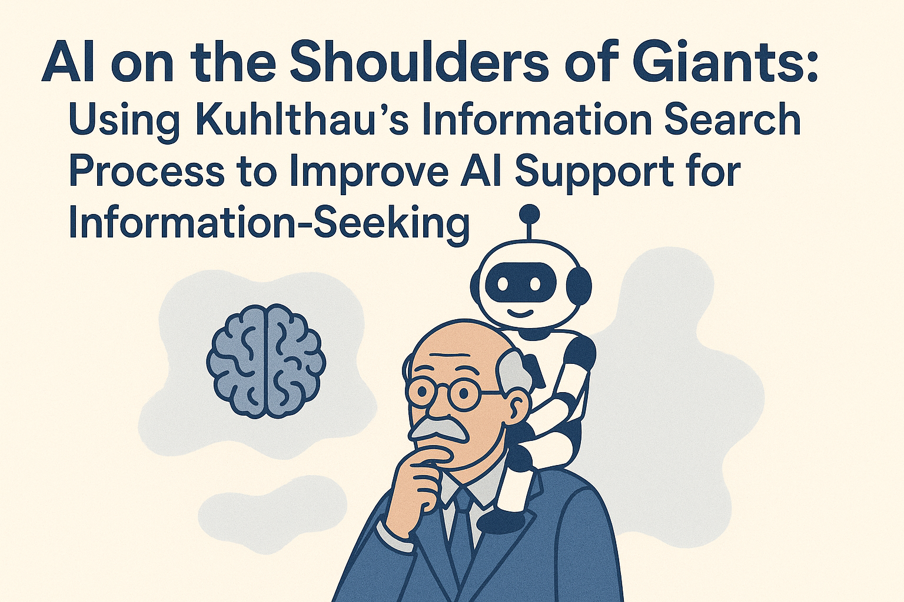

I graduated with a Bachelor's degree in Computer Science from Karunya Institute of Technology (India) in 2018 and earned my Master's degree in Information Technology from Florida State University in 2020.
I am interested in research areas related to Generative Artificial Intelligence (GenAI), AI-powered chatbots, Information-seeking Behavior, Human-Computer Interaction (HCI), and AI in Education (AIED). My overarching goal is to advance the field by enhancing human-computer interactions and improving learning experiences through innovative AI applications.

Acceptability of Artificial Intelligence in higher education Jonathan Adams,
Benhur Ravuri,
Willa Gutowski
Under Review (2025)
Acceptability of AI in Higher Education: What’s Important? Jonathan Adams,
Benhur Ravuri,
Willa Gutowski
SITE 2025 Proceedings (In press)
This study examines faculty perspectives on generative AI adoption in higher education, revealing that while proponents emphasize benefits like personalized learning and research facilitation, skeptics raise concerns about critical thinking, academic integrity, and ethical issues, highlighting the need for institutions to strategically integrate AI while preserving human judgment and academic values.

AI on the Shoulders of Giants: Using Kuhlthau’s Information Search Process to Improve AI Support for Information-Seeking Benhur Ravuri &
Marcia A. Mardis Library Trends Journal 2025 (In press)
This study explores how librarians' use of clarifying questions to guide patrons parallels chatbot-user interactions, suggesting that applying Kuhlthau’s Information Search Process (ISP) can help improve AI-driven chatbots by enhancing prompt engineering, refining responses, and balancing human mediation in information-seeking.
This study analyzed 247 Reddit posts on ChatGPT in education. Most users were neutral, but positive views outweighed negative ones. While ChatGPT helps students, it can also be biased or incorrect. Understanding user perceptions is important.
This study examines key ethical principles in AI for healthcare through thematic analysis. Using survey data from 36 AI experts (Pew Research Center, 2020), it identifies justice, privacy, bias, regulation gaps, risks, and interpretability as major concerns. To address these issues, the study proposes a utilitarian ethics-based framework for ethical AI design in healthcare.
This study examines ChatGPT’s impact on organizational management, highlighting its benefits and challenges. It offers insights to help organizations integrate ChatGPT effectively.
This paper examines AI research in higher education from 2019 to January 2023, analyzing 723 articles. After filtering for relevant terms, 113 articles were categorized into adaptive systems, assessment, profiling and prediction, and intelligent tutoring. The results show rapid AI development, with most applications focused on predicting student performance, though few tools are ready for classroom use.
{kind=link}